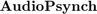

SOURCE : https://github.com/vladscript/audiopsynch.git
Installation and Use Guide
Contents
0. Requirements
- MATLAB
- PsychToolbox (PTB-3)
- GazePoint Control
- Enabled Microphone (Windows Settings)
- Paired Neurosky (Bluetooth Settings)
1. General Settings and Tests
- Import functions:
>>Import_AudioPsynch
- Neurosky (each time it's paired):
>>edit MindWaveSettings
COMportNumber See in (W10):
WindowsSettings/Bluetooht and Other Devices/More Options
See Baud Rate
See Data Format & Type>>NeuroSkyTest
- Microphone (only for Laptop B in Setup B run once):
>>MicrophoneFinder
Sampling frequency
N bits
N channels
Seconds to record- Camera (only once or a webcam is installed)
>>CameraFinder
Select webcam: built-in or USB
Select resolution available2. Setup A [Audio Trigger]
- PC A
- Connect audio splitter.
- Set and edit >>BeepTrainBuilder
Audio beep to be send # >>BeepHeader
3. Setup B [Single PC]
- PC B
- -------------- Before Experiment --------------------------------------
- 0 Turn PC on
- 1 Open MATLAB @ AudioPsynch location
- 2 Plug and callibrate Eye Tracker using GazePoint Control
- 3 Pair Neurosky to Windows
- 4 Run: >>ExampleSetupB
- 4.1 Select sensors to use and see if they are detected by MATLAB
- -------------- Experiment ---------------------------------------------
- 5 Re-Callibrate Eye-Tracking with subject
- 6 Run Experiment with subject
4. Experiment Demos
- >>
5. Visualize Data Experiment Test
- >>